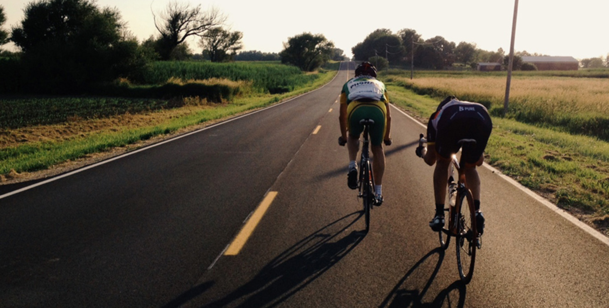

CURSA POPULAR DE MUNTANYA
SALTA MARRADES
Montaña en Santa Maria d'Oló
Catalunya | Barcelona
14.5 km en 1 h. 6 min. 24 s.
CROS DE SANT JORDI
Tierra en Navàs
Catalunya | Barcelona
10 km en 37 min. 48 s.
CROS 1 DE MAIG ARTÉS
Cross en Artés (Bages)
Catalunya | Barcelona
10.2 km en 37 min. 36 s.
4A CURSA PER
MUNTANYA DEL VOLTREGANÈS
Montaña en Sant Hipòlit de Voltregà
Catalunya | Barcelona
12 km en 58 min. 1 s.
PUJADA DE BAGÀ A COLL DE PAL
Asfalto running en Bagà
Catalunya | Barcelona
19 km en 1 h. 35 min. 41 s.
SANT SILVESTRE MANRESANA
Asfalto running en Manresa
Catalunya | Barcelona
8 km en 27 min. 8 s.
CURSA SOLIDÀRIA LA SOMNÀMBULA
Asfalto running en Roda de ter
Catalunya | Barcelona
7 km en 25 min. 11 s.